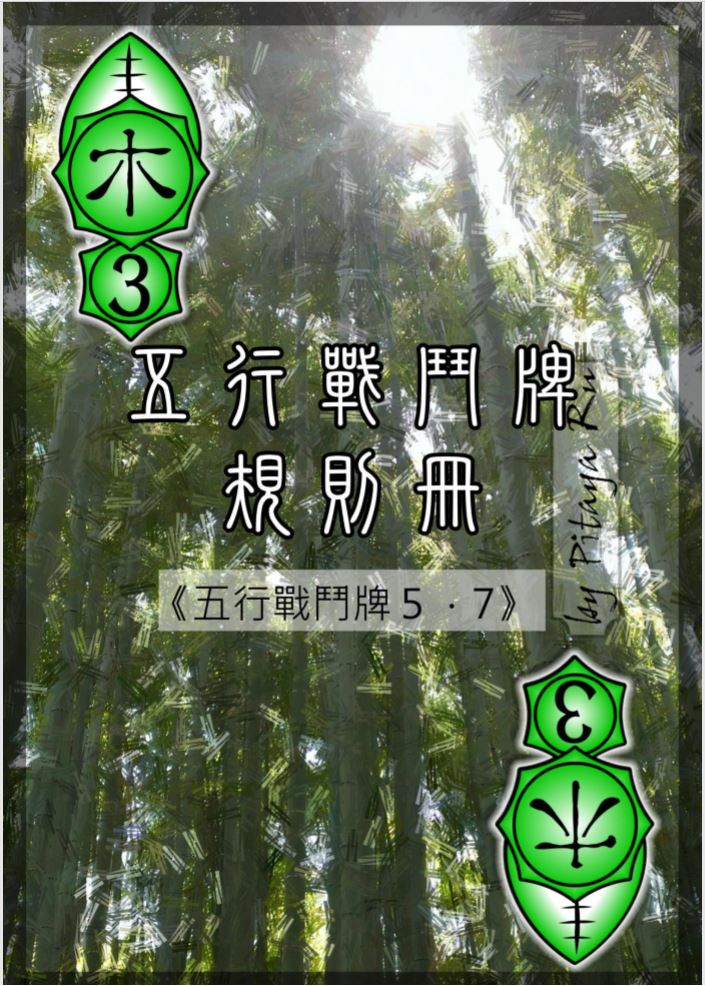
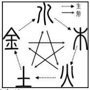
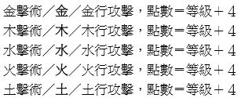
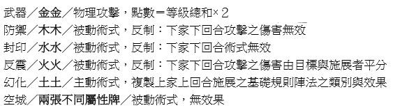
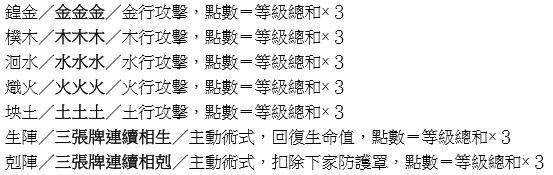
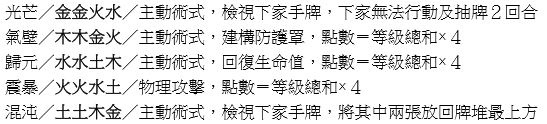
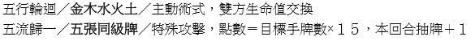

|  | 五行戰鬥牌
遊戲說明 五行戰鬥牌 每張牌有屬性（金木水火土）和等級（１～５）。 共９０張，每種屬性１８張。 所有玩家共用一副牌。 牌本身象徵五行法力，用來施展各種法術，藉由施展法術打敗對手。 簡單流程 1. 將一副五行戰鬥牌洗牌後，以猜拳、抽牌比等級大小或其他方式決定先後順序 2. 先手發４張手牌，後手方發５張手牌 3. 雙方各設定１００點生命值（以紙筆或其他工具記錄），消耗至０者戰敗。（生命值上限與初始值相同） 4. 兩位玩家依序輪流行動，直到遊戲結束 5. 遊戲結束：任一方或雙方生命值歸０ 每回合要做的事 1.玩家每回合輪到時要進行「出牌」和「抽牌」兩個動作，順序不能顛倒，也不能放棄不做 2.出牌：用手牌打出一個陣法（不能不出，也不能出兩個以上）（若是沒有手牌，則直接抽牌） (陣法有攻擊、主動術式、被動術式等類別。攻擊和主動術式直接正面打出，馬上發揮效果，被動術式則背面覆蓋，等對方下回合出牌時再翻開發動) 3.抽牌 4.五行戰鬥牌的抽牌比較複雜，包含「棄牌」規則：抽牌時多抽一張，從中選一張不要的牌捨棄，其他牌再加入手牌 5.每回合玩家原則上可以抽２張牌，但不能抽超過手牌上限５張。配合棄牌規則（多抽一張後棄一張） 每回合基本上就是「抽三棄一（抽三張牌，從中選擇一張牌捨棄，其他加入手牌）」 （例外：手牌已經有四張時，因為只能補到五張，故只能「抽二棄一」） （如果抽牌數量因為規則而調整（如五流歸一的效果），可能會增加成抽四棄一、抽五棄一等。（無論如何調整，都是多抽一張並棄一張）） 6.抽完牌後，就換對方回合，由對方執行出牌和抽牌。輪流直到遊戲結束 陣法的施展流程 1.出牌時，除了被動術式是覆蓋出牌外，其餘陣法都直接正面打出。 2.攻擊的施展流程：出牌→計算點數→（翻開上家蓋牌）→傷害及效果處理 3.攻擊的傷害會受「防禦」和「反震」兩種蓋牌影響，不受「封印」影響。 4.攻擊的附帶效果不會受任何蓋牌影響，無論傷害是否被無效，附帶的效果仍然有效。（如「五流歸一」讓施展者多抽一張牌的效果） 5.原則上攻擊點數多少，就給予多少傷害，例外是五行攻擊（金木水火土）可能發生相生、相剋、相抵。（請參閱下面的部分） 6.主動術式的施展流程：出牌→（計算點數）→（翻開上家蓋牌）→處理 7.部分主動術式會計算點數，如生陣（回復生命值）、氣壁（建構防護罩）等。部分不需要計算點數的主動術式（如光芒、五行輪迴）則略過計算點數步驟。 8.主動術式會被「封印」無效，其他蓋牌則無法影響主動術式。 9.被動術式的施展流程：蓋牌→（翻開上家蓋牌） 10.被動術式會被「封印」無效，其他蓋牌則無法影響主動術式。 五行相生相剋表  大部分攻擊有其屬性 若上家(上一位行動的玩家)施放之術式有屬性，將保持該屬性一回合(該屬性顯示在狀態列) 而此時施放術式者依照施放術式之屬性將有額外的傷害計算 當所施放之術式屬性 : 剋上家屬性時 傷害X2 EX.上家打水 我方打土 與上家屬性相同時 傷害/2 (無條件進位) EX.上家打水 我方打水 生上家屬性時 所造成之傷害將回復對方生命 EX.上家打水 我方打金 此一規則將對戰鬥有很大的影響 術式表 一張牌的陣法  二張牌的陣法  三張牌的陣法  四張牌的陣法  五張牌的陣法  注意 : 1.幻化對方的幻化時會複製對方複製之陣法 2.擁有氣壁時屬性視為沒有，但受到物理攻擊時傷害x2 3.擁有氣壁時使用氣壁血量不會疊加，而會直接刷新氣壁 4.防護罩歸零破壞時(包含傷害大於剩餘氣壁時)仍然承受當次攻擊的所有傷害，玩家本體不受損傷。 5.凡是<術式>皆會被封印包括封印也是，<攻擊>則皆會被防禦 6.如有疑問可參閱詳 細規定(雙人戰鬥流程p.8 基本術式注意事項p.9 棄牌p.10) 小技巧 : 由於抽牌限制，只有單張擊數可以回牌，兩張術式則不多也不會少牌， 三張以上(包含三張)的術式雖然強力但會有回牌時的空窗期 |